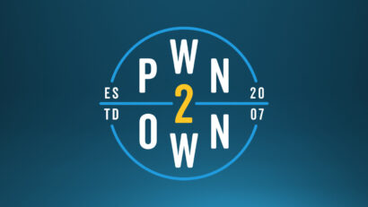

Criada em 2007, a Pwn2Own é uma competição hacker que reúne várias equipes de programadores tentando encontrar falhas ainda desconhecidas em aplicativos e sistemas operacionais populares. A edição de 2020 foi realizada na semana passada, nos dias 18 e 19 de março, e, devido à pandemia global do novo coronavírus (SARS-CoV-2), aconteceu de forma remota — e não em Vancouver, no Canadá, onde costuma ser sediada, como parte da conferência de segurança CanSecWest.
Logo no primeiro dia da disputa, o Windows sofreu dois bem-sucedidos ataques, ambos sobre duas vulnerabilidades envolvendo os blocos de memórias liberados após autenticação — também conhecidos como Use After Free (UAF). As vulnerabilidades expuseram privilégios de sistema que poderiam ser escalados. Com isso, os grupos Fluorescente e Fluoroacetate, responsáveis pela primeira e segunda ofensiva, respectivamente, abocanharam US$ 40 mil.
Vale destacar que o pessoal do Fluroacetate ganhou certa proeminência no Pwn2Own do ano passado, após descobrir um grande problema no navegador dos carros elétricos Tesla. Isso rendeu ao time não somente popularidade como também a bolada de US$ 375 mil.
Vulnerabilidades no macOS, Ubuntu e Adobe
Nesta temporada, o sistema operacional da Apple apanhou dos hackers em seis vulnerabilidades diferentes encontradas no navegador Safari, que poderia garantir aos atacantes privilégios escaláveis no sistema. O time da Georgia Tech conseguiu, assim uma soma de US$ 70 mil. Já o grupo RedRocket CTF encontrou uma brecha para validação de administração local no Linux e levou para casa US$ 30 mil.
Os softwares utilitários também foram alvos e o VirtualBox, da Oracle, teve dados vazados e códigos executados por meio de uma vulnerabilidade, explorada pela equipe 4nhdaden, que, dessa forma, conquistou US$ 40 mil. O Fluoroacetate apareceu de novo ao usar uma brecha do Adobe Acrobat Reader para conseguir tomar conta do núcleo do Windows e controlar o sistema. Com isso, eles ganharam mais 50 mil.
Vale destacar que muito da parte técnica é exibida em vídeos, a exemplo desse abaixo, sobre os bugs no VirtualBox. As empresas são notificadas e corrigem as falhas, muitas vezes antes mesmo da veiculação desses problemas na competição.
Além da soma em dinheiro, as equipes recebem pontuação no ranking Master of Pwn, o que, claro oferece grande visibilidade aos participantes — e talvez um bom emprego nos setores de segurança das gigantes da tecnologia.